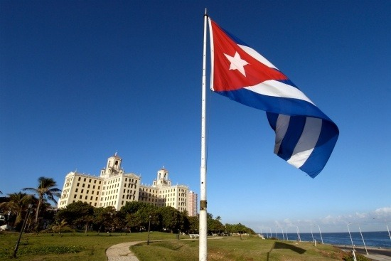
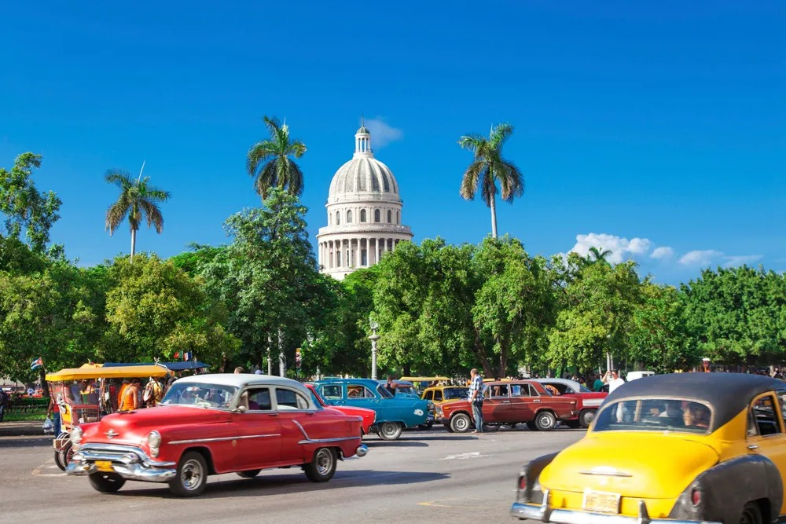
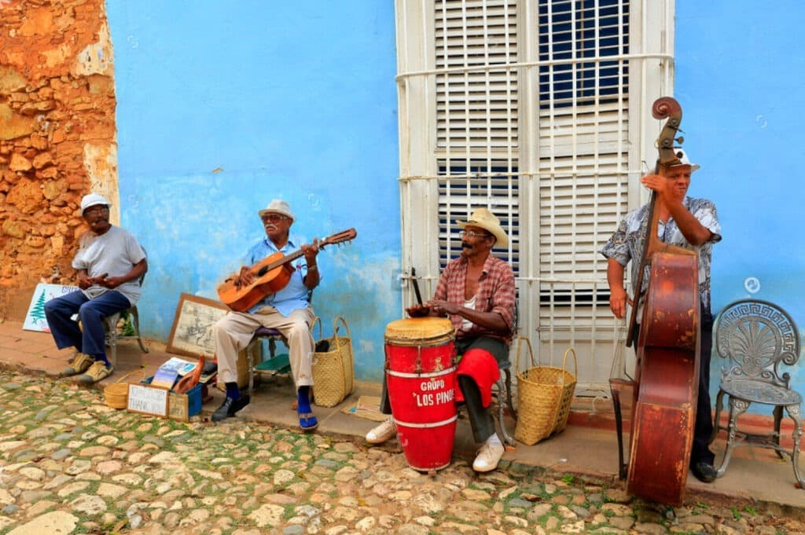
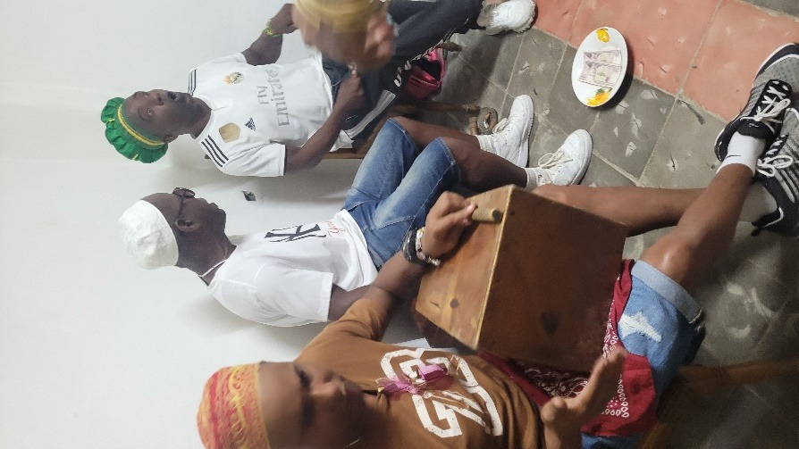
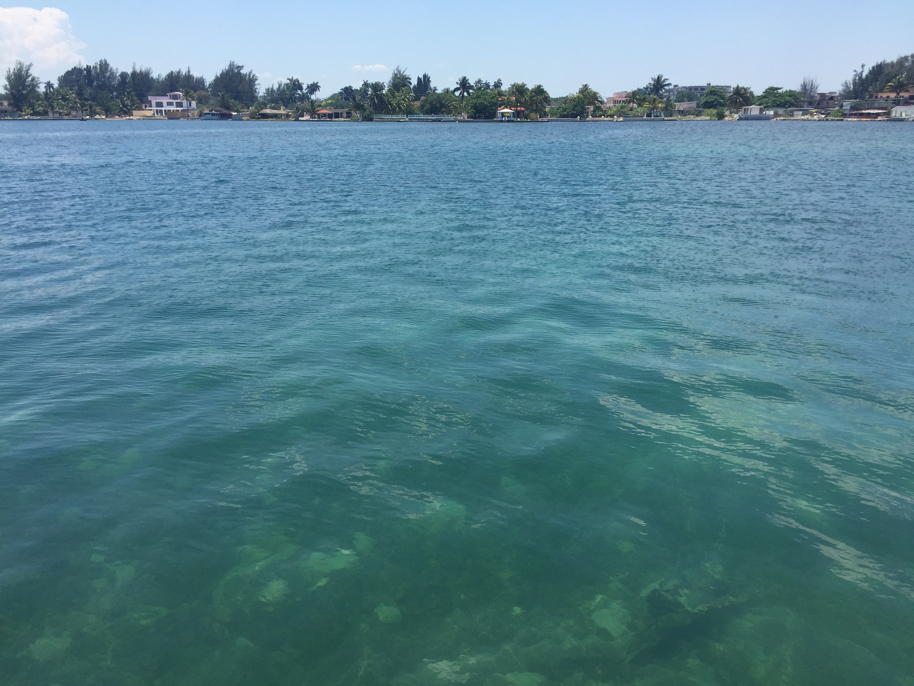

IDÉE VOYAGE EN PETIT GROUPE
Cuba
Découverte, Patrimoine et Traditions
🏛️ La Havane · Vieille Havane & Vedado
🌿 Trinidad & Viñales
💃 Danses cubaines
🏝️ Baie des Cochons & Cienfuegos
Santería · Hemingway · Trinidad UNESCO
vpdvoyages.com

PRÉSENTATION
Plongez dans l'essence de Cuba : La Havane et ses voitures vintage, Trinidad joyau colonial UNESCO, la vallée de Viñales et ses mogotes, la Baie des Cochons. Histoire, musique, danses et rencontres authentiques.
🏛️ La Havane · Vedado
🕺 Danses cubaines
🌿 Viñales
🥃 Rhum & Tabac
📊 LE PAYS Perle des Antilles
1 250
km d'Est en Ouest
1 600
cayos
9,7 M
habitants
Itinéraire La Havane → Baie des Cochons → Cienfuegos → Trinidad → Valle de los Ingenios → Tope de Collantes → retour Havane → Hemingway → Santería → Viñales → Rhum & Cimetière Colón.
🚗 Transferts en Oldsmobile 1950

📅 PROGRAMME 1ère semaine
Jour 2 Vedado · Musée Arts Déco ou Napoléon · Resto El Balcón
Jour 3 Vieille Havane · Capitole, Obispo, Plaza Armas, Bodegón Asado
Jour 4 Panoramique · Place Révolution · Playas del Este
Jour 5 Baie des Cochons · Grottes, Cueva de los Peces, Caleta Buena, Playa Larga
Jour 6 Cienfuegos (Punta Gorda) → Trinidad · Palacio Cantero, Casa de la Trova
Jour 7 Valle de los Ingenios · Tour Iznaga, déjeuner guajiro, cheval/baignade
Jour 8 Trinidad · Playa Ancón, Plaza Mayor

📅 PROGRAMME 2ème semaine
Jour 9 Retour Havane · Soirée cubaine Capdevila, Rancho Guajimico
Jour 10 Hemingway · Finca Vigía, Cojímar · Initiation danses latines
Jour 11 Santería · Syncrétisme, cérémonie santera, Cajón a los Santos, Gato Tuerto
Jour 12 Cigares · El Pinar S. Luis, Viñales mogotes, champs de tabac, Centre Montañez
Jour 13 Viñales · Cueva del Indio ou Santo Tomás, ferme agro-écologique, apéro cocktails
Jour 14 Rhum · Musée Havana Club, Foire San José, Fábrica de Arte
Jours 15-16 Cimetière Colón · Temps libre · Transfert aéroport

🏙️ LA HAVANE Être Havanais
Vieille Havane Plaza de Armas, Capitole, Obispo, Palais des Capitaines Généraux
Le Vedado Musée Napoléon, Arts Décoratifs, Malecón, FOCSA
Hemingway Finca Vigía, port de Cojímar
Playas del Este Santa María, Tarará
Danses cubaines Initiation 2h (ou cours 10h) salsa, cha-cha, rumba
Transferts vintage Oldsmobile 1950

💃 CULTURE & TRADITIONS
Danses cubaines Salsa, son, rumba, cha-cha – cours avec professeurs locaux. Ambiance rooftop ou salle – pure énergie cubaine.
Santería Syncrétisme religieux afro-cubain. Immersion dans une véritable cérémonie (Cajón a los Santos) à Centro Habana.

🌊 SUD DE CUBA
Trinidad UNESCO Ruelles pavées, Plaza Mayor, Palacio Cantero, Casa de la Trova
Valle de los Ingenios Tour Iznaga, déjeuner guajiro, balades à cheval
Baie des Cochons Grottes inondées, Cueva de los Peces, Caleta Buena
Cienfuegos Punta Gorda, architecture française, ambiance caraïbe
Tope de Collantes Nature d'altitude
Playa Ancón Plage sur la mer des Caraïbes

🌿 VIÑALES Patrimoine UNESCO
Vallée des mogotes (excursion en option). Paysages spectaculaires de mogotes, plantations de tabac, cuevas (Cueva del Indio ou Santo Tomás). Ferme agro-écologique et rencontre avec les guajiros. Le cœur rural et authentique de Cuba.

🛂 AVANT LE DÉPART
- Passeport valable 6 mois après retour, numérisation + photocopie
- Carte de tourisme (visa) à obtenir avant le départ
- Formulaire D'Viajeros à remplir en ligne avant l'arrivée
- Assurance santé obligatoire (attestation via carte Visa) – 155 000 € frais médicaux, rapatriement 24/7
💵 ARGENT & PRATIQUE
Monnaie Pesos cubains (CUP) – 1 € ≈ 134 CUP. Change en banque ou Cadeca. Pas à l'aéroport ni dans la rue.
Prix indicatifs Paladar 10–35 € · Cocktail ~4 € · Cabaret ~30 €
Prises US (double plat) 110/220 V – adaptateur recommandé
Wi-Fi Cartes Internet prépayées
Adresses c/ 23 # 251 e/ I y J = rue 23 n°251 entre I et J
🔒 SÉCURITÉ
Cuba est le pays le plus sécuritaire d'Amérique latine
- Ne pas marcher seul(e) le soir (peu d'éclairage)
- Copie du passeport, pas de bijoux ostentatoires
- Décliner poliment mais fermement les jineteros
- Vérifier les notes de resto et le rendu
- Ne pas acheter de cigares dans la rue (max 50 à la sortie)
- Vieille Havane : marcher au milieu de la rue



Bon séjour à Cuba
au cœur des Caraïbes
La Havane · Trinidad · Viñales · Baie des Cochons
🏛️ patrimoine UNESCO
💃 danses cubaines
Cuba
Photos : dossier images/ · Cuba Découverte, Patrimoine et Traditions